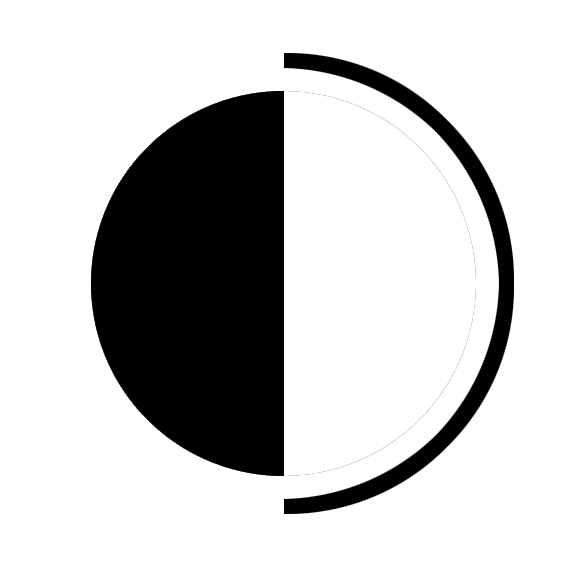

OneCrack.su

FUNCIONANDO
ultima actulización de links [31/05/21]
INSTRUCCIONES
1. Abrir vac bypass
2. Abrir inyector
3. Inyectar otc y jugar
ONETAP + INYECTOR + VAC BYPASS
funcionando desde [27/05/2021]
xnoobx 1.5.0 [24/05/21]
NoVac v1.0.0.4 [31/05/21]